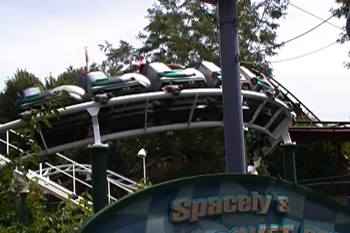

| |
Spacely's Sprocket Rocket Review

We're here at Six Flags Great America where we'll be revewing their kiddy coaster. Spacely's Sprocket Rockets. After climbing into the seats, you quickly climb up the lifthill. However, after cresting the lifthill, you twist down the lifthill, twist down a nice spiral drop. It's a nice first drop for a kiddy coaster. Then you turn a little, before gently dropping a little before you swoop up into a turnaround that leads you into a small drop. You then go through a turn that leads into a small drop that leads into a small helix into the brake run. Then you glide back to the station. This is a fun roller skater, but I'd only ride it if you don't have the credit or love rollerskaters.
4/10
Location: Six Flags Great America
Opened: 1998
Built by: Vekoma
Last Ridden: August 13, 2010
I have ridden this exact same ride at the following parks.
Castle Park
Disneyland Resort
Kentucky Kingdom
Movie Park Germany
Six Flags Magic Mountain
Tokyo Disney Resort
Spacely's Sprocket Rocket Photos

Home
|